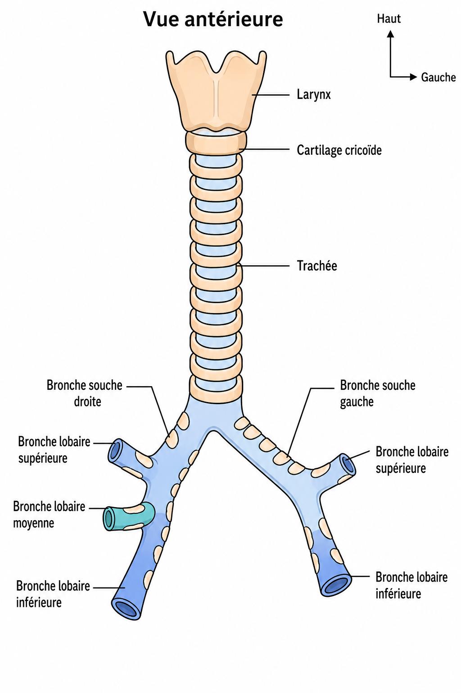
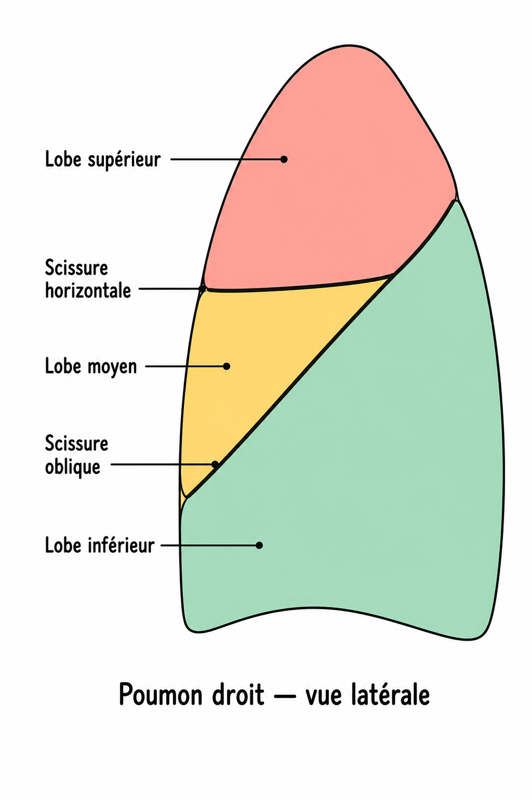
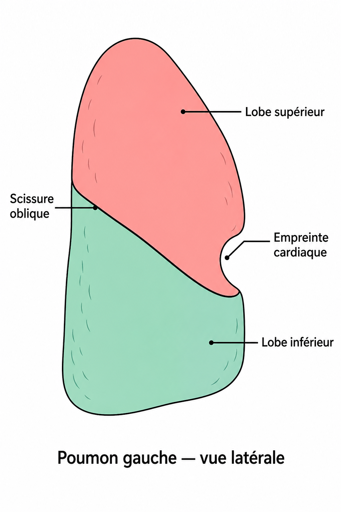

Schéma → cours avec mots clés à placer → flash P1/P2/P3. Contenu barré exclu.
P1
P2
P3
⭐ fréquence concours
1. Constituants P3
- Voies aériennes : de l’air (face, cou, thorax).
- Poumons : échanges air–sang au niveau des .
alvéoles
transport
2. Voies aériennes supérieures P2

- Entrée : bouche ou nez → fosses nasales / cavité buccale / larynx + pharynx.
- ⭐ = partie supérieure du pharynx, en arrière des ⭐.
- = partie moyenne · carrefour aéro-digestif (clapet : aliments arrière / air avant).
- 🆕 Laryngopharynx : appartient à la voie · pas aux .
digestive
oropharynx
fosses nasales
voies aériennes
nasopharynx
3. Voies aériennes inférieures P2
Souvent tombé Trachée C6→T5 ; bronche souche droite plus verticale.

- Sous le cartilage : larynx → trachée → bronches souches.
- Trachée : anneaux en U + muscle trachéal · naît en regard de 🆕 ⭐ · se divise en regard de ⭐.
- Bronche souche plus verticale ⭐ (25–30°) · donne lobaires · gauche donne .
Larynx = respiration + phonation (cordes vocales).
T5
3
cricoïde
2
C6
droite
4. Sac alvéolaire P2
- Lobaires → 10 bronches / poumon → sub-segmentaires → (sans cartilage) → sac alvéolaire.
- Sac = alvéoles + (artérioles / veinules pulmonaires) → ⭐ (réoxygéner le sang / O₂ in · CO₂ out).
hématose
bronchioles
segmentaires
capillaires
5. Poumons : généralités P3
- Contiennent la terminaison des VAI = .
- Aspect lisse / rosé (non-fumeurs) · grisâtre (fumeurs) · capacité totale ≈ .
5 litres
arbre bronchique
6. Intra-thoraciques P2

- Intra-thoraciques et ⭐⭐⭐ (de part et d’autre du médiastin) · moulés sur le grill costal.
- Exception : l’ ⭐ fait saillie au-dessus de l’orifice supérieur · sillon de la · recouvert de plèvre.
1ère côte
extra-médiastinaux
apex
7. Asymétrie des 2 poumons P2


- Droit : lobes ⭐⭐ · scissures + .
- Gauche : lobes ⭐⭐⭐ · 1 scissure · .
empreinte cardiaque
3
oblique
2
horizontale
oblique
8. Cônes à 3 faces P2
- Face : lisse, convexe (grill costal).
- Face : concave (coupoles).
- Face médiale : vertébrale + médiastinale · porte le ⭐⭐ (entrée/sortie du pédicule) · seule zone sans (ligne de réflexion).
hile
diaphragmatique
plèvre
costale
9. Pédicule pulmonaire P1
Souvent tombé Fonctionnel (petite circ.) vs nourricier (grande circ.).
- Entre/sort par le hile. Fonctionnel = · circulation : ⭐ + ⭐ + ⭐.
- Nourricier = nutrition du parenchyme · circulation : ⭐⭐ + ⭐⭐ (+ nerfs / lymphonœuds bronchiques ⭐⭐).
artères bronchiques
petite
veines pulmonaires
hématose
grande
bronche souche
veines bronchiques
artère pulmonaire
10. Subdivision du parenchyme P1
Souvent tombé 10 segments D = 10 G ; trio segmentaire ; acinus = unité terminale.
- Suit la division bronchique : → → → .
- Lobes : D ⭐ / G ⭐. Segments : D ⭐⭐⭐ = G ⭐⭐⭐.
- Chaque segment : ventilé par ⭐⭐ · vascularisé par ⭐⭐ · drainé par ⭐⭐ (1 veine / 2 segments).
- Acinus = unité terminale ⭐ · contient les ⭐.
10
lobules
3
artère bronchique segmentaire
lobes
sacs alvéolaires
segments
2
veine bronchique intersegmentaire
10
acini
bronche segmentaire
11. La plèvre P2
- Membrane protectrice des poumons ⭐ · 2 feuillets : ⭐ (contact poumon) · (réflexion au hile).
- Cavité pleurale virtuelle (+ liquide de glissement). Patho : air = · sang = → drain.
hémothorax
viscéral
pneumothorax
pariétal
12. Vascularisation P2
- Artère bronchique ⭐ naît de l’.
- 2 veines bronchiques / poumon (ant. + post.) → système → .
veine cave supérieure
aorte
azygos
13. Rapports et limites P3
- Haut : · bas : · dedans : · dehors : .
médiastin
grill costal
orifice supérieur
diaphragme
14. Ventilation en 2 phases P3
- Inspiration : O₂ (+ N₂) vers alvéoles · expansion (surtout ) · forcée = intercostaux externes + ceinture scapulaire.
- Expiration : CO₂ out · relâchement · forcée = muscles (intercostaux int., paroi abdo…).
accessoires
diaphragme
active
passive
Flashcards — fin de fiche
Classées par priorité.
P1 — à maîtriser en priorité
Combien de segments D / G ?
10 et 10 ⭐⭐⭐ (même nombre des deux côtés).
Trio d’un segment ?
Bronche segmentaire · artère bronchique segmentaire · veine bronchique intersegmentaire (1/2 segments).
Subdivision du parenchyme ?
Lobes → segments → lobules → acini. Acinus = unité terminale (+ sacs alvéolaires).
Pédicule fonctionnel vs nourricier ?
Fonctionnel = hématose / petite circ. (BS, AP, VP). Nourricier = grande circ. (art./veines/nerfs/lympho bronchiques).
P2 — à bien connaître
Lobes D vs G ?
D : 3 lobes + 2 scissures · G : 2 lobes + 1 oblique + empreinte cardiaque.
Extra-médiastinaux + apex ?
De part et d’autre du médiastin ⭐⭐⭐ · apex au-dessus de l’orifice supérieur ⭐.
Trachée : naissance / bifurcation ?
C6 (cricoïde) 🆕 → T5 ⭐.
Bronche souche droite ?
Plus verticale ⭐ (25–30°) · 3 lobaires (G = 2).
Hile pulmonaire ?
Entrée/sortie du pédicule ⭐⭐ · seule zone sans plèvre (réflexion).
Plèvre : feuillets + patho ?
Viscéral (poumon) / pariétal · pneumo = air · hémo = sang.
Laryngopharynx 🆕 ?
Voie digestive — pas aux voies aériennes.
Artère bronchique naît de ?
L’aorte ⭐ · veines → azygos → VCS.
P3 — lecture attentive
Inspiration vs expiration ?
Inspi active (diaphragme) · expi passive (relâchement) · forcée = accessoires.
Capacité totale des 2 poumons ?
≈ 5 litres.
Larynx : 2 rôles ?
Respiration + phonation (cordes vocales).
Modèle figé — dis « publie » pour le téléphone.